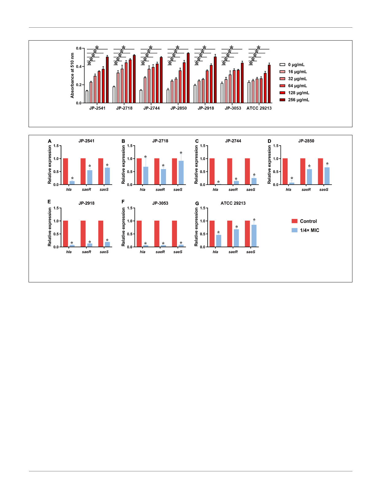

Zheng et al.
Activities of Chinese Dragon’s Blood
FIGURE 5 | Different concentrations of CDB used to disrupt the bacterial cell membrane integrity. *P < 0.05; N.S., P > 0.05.
FIGURE 6 | Relative expression level of hla, saeR, and saeS in S. aureus strains after culturing with 1/4 × MIC concentration of CDB. *P < 0.05. (A) Genes
expression level in JP-2541. (B) Genes expression level in JP-2718. (C) Genes expression level in JP-2744. (D) Genes expression level in JP-2850. (E) Genes
expression level in JP-2918. (F) Genes expression level in JP-3053. (G) Genes expression level in S. aureus ATCC 29213.
Therefore, we next sought to further investigate the activities
of CDB against S. aureus in vivo by constructing the mouse model
of S. aureus skin infected wound, and then visual observation
of surface healing, bacterial counts, histology observation,
and immunohistochemical analysis can be performed in the
uninfected- and infected-wound groups. Most importantly,
we are aware that understanding the underlying antibacterial
activities of CDB against S. aureus is the crucial first step in
exploring the molecular mechanisms or specific pathways of CDB
to curb the growth, biofilm formation, and virulence factors
of the pathogen.
first time. These findings together indicate that CDB possesses
significant potential as an alternative for the treatment of infected
wounds caused by S. aureus in clinical settings. Furthermore, it
will be worthwhile to further investigate the activities of CDB
against S. aureus in vivo.
DATA AVAILABILITY STATEMENT
The raw data supporting the conclusions of this article will be
made available by the authors, without undue reservation.
CONCLUSION
In conclusion, CDB, which is one of the most precious
traditional Chinese medicine, exerts positive antibacterial efficacy
on S. aureus, and can also reduce the biofilm formation and
retard the virulence factors alpha-hemolysin of S. aureus by
downregulating the expression levels of saeR, saeS, and hla genes.
Our study provides new insights into the rational use of CDB
for the treatment of infected wounds caused by S. aureus for the
ETHICS STATEMENT
The studies involving human participants were reviewed and
approved by The Ethics Committee of the First Affiliated Hospital
of Wenzhou Medical University (approval number: 2021–R003).
Written informed consent for participation was not required for
this study in accordance with the national legislation and the
institutional requirements.
7